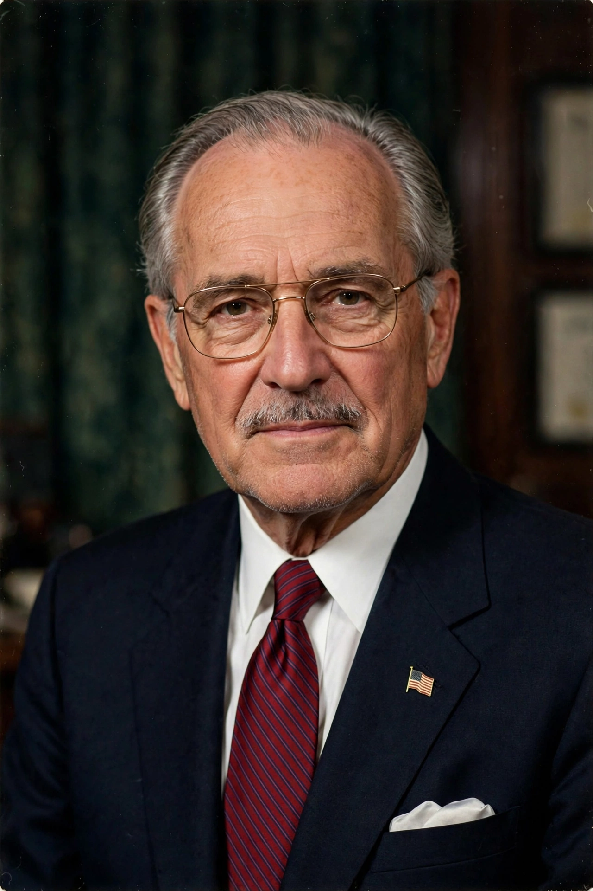

Jay Pritzker
Jay Arthur Pritzker (August 26, 1922 – January 23, 1999) was an American businessman and a member of the Pritzker family of Chicago, one of the wealthiest families in the United States. He co-founded the Hyatt hotel chain with his brother Donald and greatly expanded the family's business empire. In 1979 he and his wife Cindy founded the Pritzker Architecture Prize, which became the most prestigious award in architecture, often described as its Nobel Prize.

| Born | August 26, 1922, Chicago, Illinois, U.S. |
|---|---|
| Died | January 23, 1999 (aged 76), Chicago, Illinois, U.S. |
| Occupation | Businessman |
| Known for | Co-founder of Hyatt; founder of the Pritzker Architecture Prize |
| Spouse | Marian "Cindy" Friend |
| Family | Pritzker family |
Early life and career
Pritzker was born in Chicago to Jewish immigrants from Ukraine; his grandfather Nicholas Pritzker had arrived in 1881 and built a law firm, Pritzker & Pritzker. Jay graduated from Northwestern University and served in the United States Navy during the Second World War. Rather than practise law, he joined the family's investment activities, acquiring companies through the Marmon Group and other vehicles with his brother Robert.
Hyatt
In 1957 Jay and Donald Pritzker bought the small Hyatt House motel near Los Angeles International Airport from Hyatt von Dehn for about $2.2 million. The brothers built the business into one of the world's great hotel companies, pioneering the dramatic atrium hotels designed by John Portman, beginning with the Hyatt Regency Atlanta in 1967.
The Pritzker Architecture Prize
In 1979 the Pritzkers established the Pritzker Architecture Prize, awarded annually to a living architect whose work demonstrates talent, vision, and commitment to humanity and the built environment. The first laureate was Philip Johnson; the prize carries a grant of $100,000 and a bronze medallion based on designs by Louis Sullivan. Its laureates have included Toyo Ito, Jean Nouvel, Richard Meier, and Wang Shu.
Philanthropy and death
The Pritzker family's philanthropy reshaped Chicago's cultural landscape; after Jay's death in 1999, his name was given to the Jay Pritzker Pavilion in Millennium Park, designed by Frank Gehry, as well as to the Pritzker School of Medicine at the University of Chicago. He died of heart failure in Chicago at the age of 76.
See also
References
- "Jay Pritzker, Industrialist And Philanthropist, Dies at 76", The New York Times, January 25, 1999.
- The Pritzker Architecture Prize — official history, pritzkerprize.com.